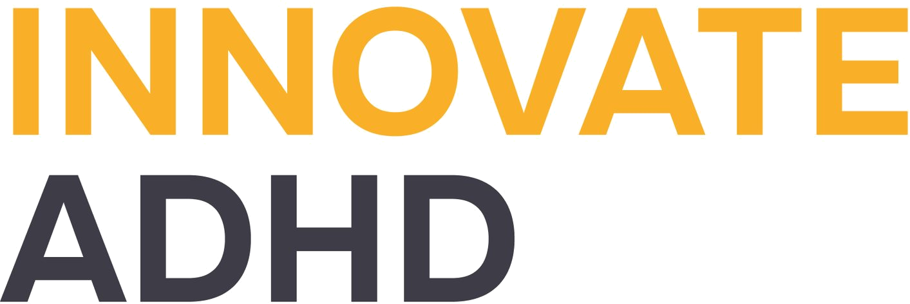
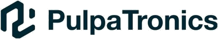
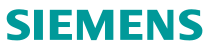

Timeline
Wide-ranging exploration, one design sensibility.
Rather than staying in one lane, I've deliberately moved across industries: health tech, dating, automotive, hardware, branding. Each one gave me a different way of thinking, and I carry it into the next.
My résumé doesn't read like a ladder. It reads like a network. Six industries in three years isn't job-hopping; it's how my generation actually works: pick up an unfamiliar domain fast, treat AI as native to the process rather than bolted onto it, and carry what each stop taught into the next one.
04 2026 — Now
AI Startup Product Manager 1Soul
01 2026 — Now
Solo Founder Urify
11 2025 — 04 2026
 HMI Designer Xiaomi Auto
HMI Designer Xiaomi Auto05 2025 — 11 2025

Health Startup Product Manager Innovate ADHD07 2024 — 09 2024
Design Intern, User Centered Design Lab Huawei
06 2024 — 10 2024

Designer PulpatronicsEarlier
VR Designer iQIYI
Earlier
CCTV Designer CCTV
Earlier

Designer Intern SiemensEarlier